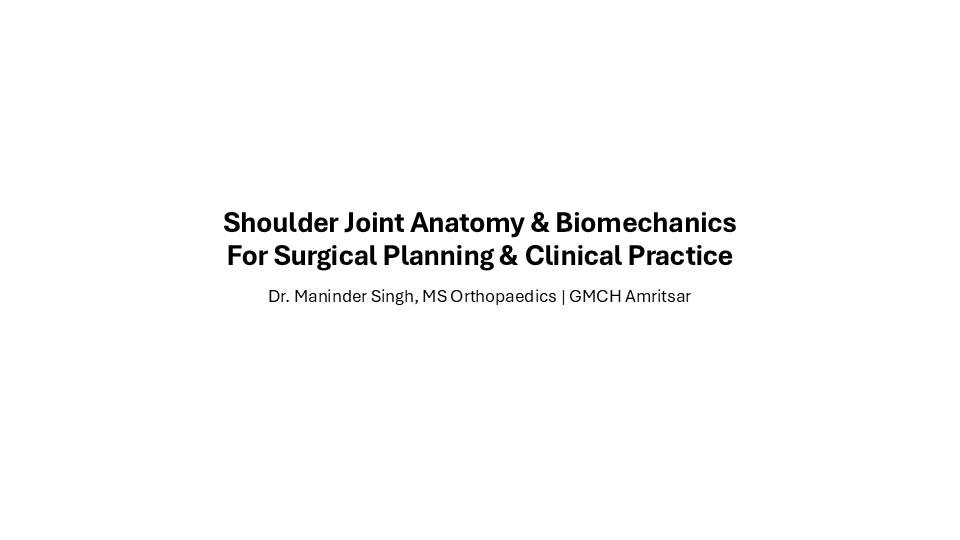
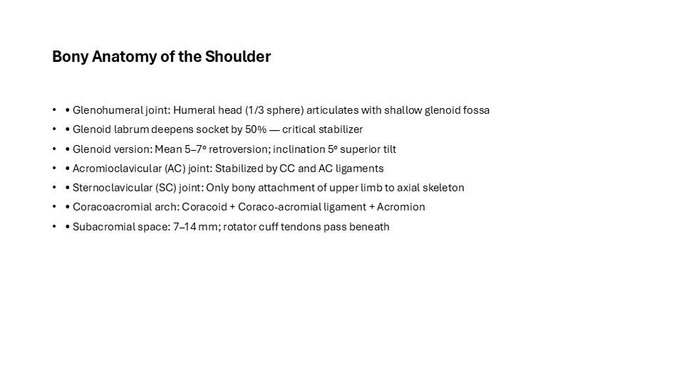
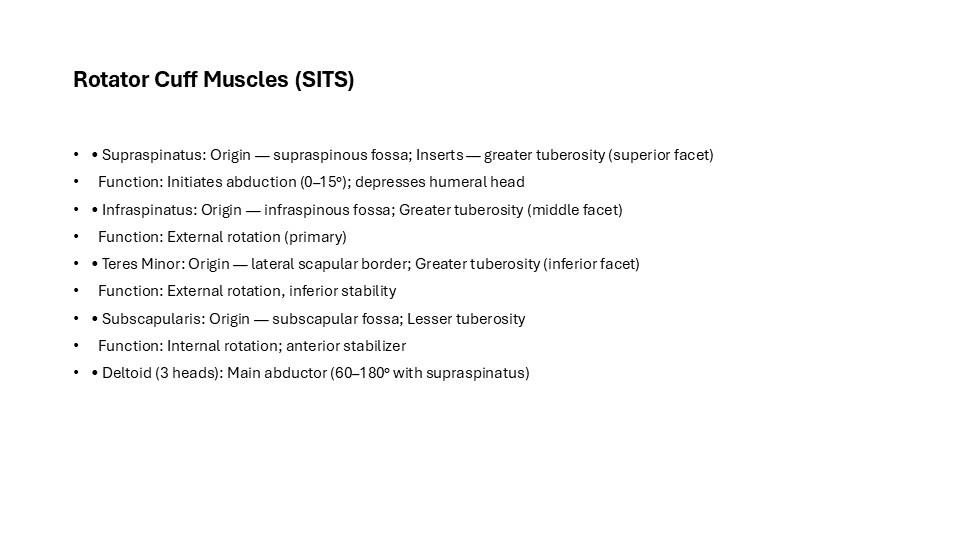
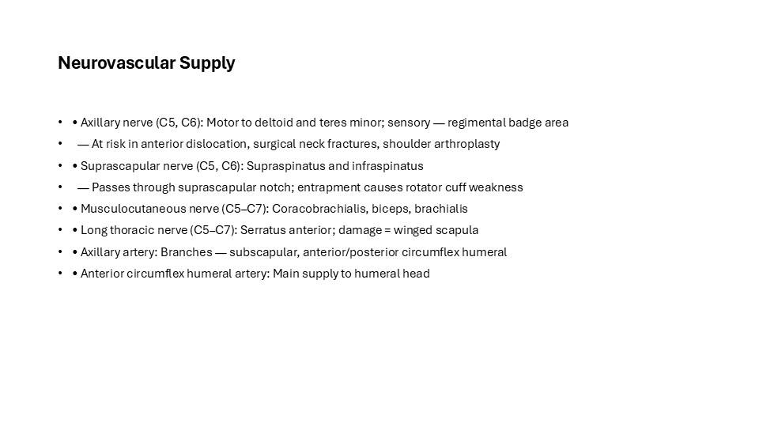
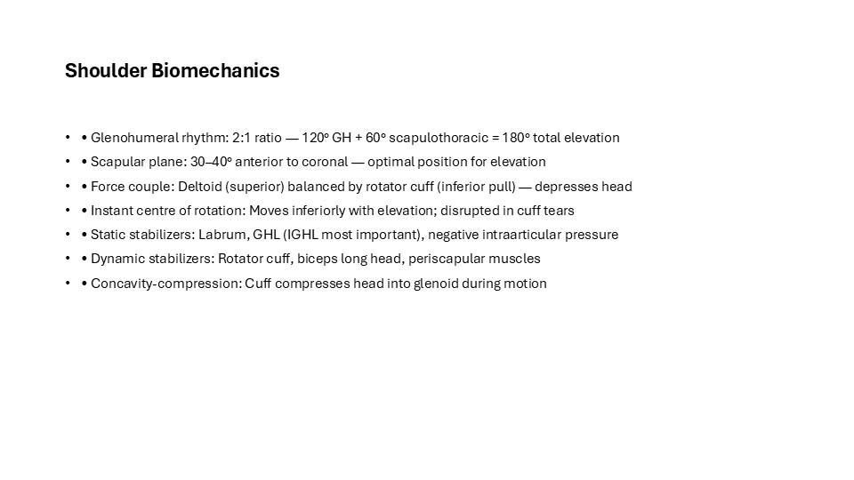
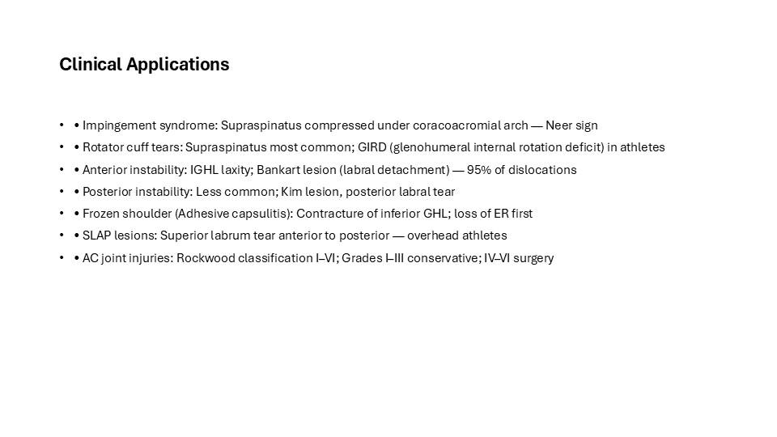
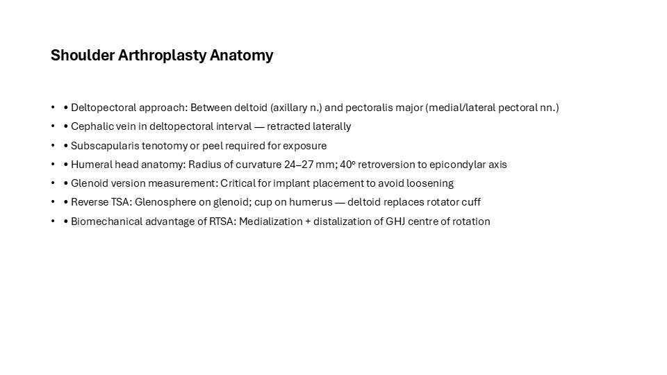
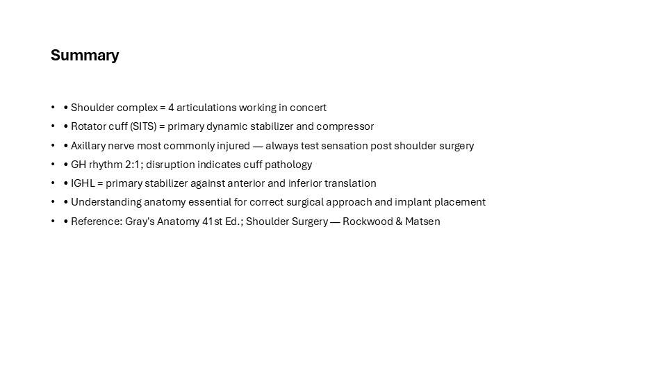

This is the full illustrated version of a teaching presentation prepared by Dr. Maninder Singh (GMCH Amritsar). Every slide is shown below with its text, so you can read it like an article — or download the original PowerPoint (.pptx) to teach from it. Topics covered include: Bony Anatomy of the Shoulder; Rotator Cuff Muscles (SITS); Neurovascular Supply; Shoulder Biomechanics; Clinical Applications; Shoulder Arthroplasty Anatomy; Summary.
Contents — jump to a slide (8)

Shoulder Joint Anatomy & Biomechanics For Surgical Planning & Clinical Practice
Dr. Maninder Singh, MS Orthopaedics | GMCH Amritsar

Bony Anatomy of the Shoulder
- • Glenohumeral joint: Humeral head (1/3 sphere) articulates with shallow glenoid fossa
- • Glenoid labrum deepens socket by 50% — critical stabilizer
- • Glenoid version: Mean 5–7° retroversion; inclination 5° superior tilt
- • Acromioclavicular (AC) joint: Stabilized by CC and AC ligaments
- • Sternoclavicular (SC) joint: Only bony attachment of upper limb to axial skeleton
- • Coracoacromial arch: Coracoid + Coraco-acromial ligament + Acromion
- • Subacromial space: 7–14 mm; rotator cuff tendons pass beneath

Rotator Cuff Muscles (SITS)
- • Supraspinatus: Origin — supraspinous fossa; Inserts — greater tuberosity (superior facet)
- Function: Initiates abduction (0–15°); depresses humeral head
- • Infraspinatus: Origin — infraspinous fossa; Greater tuberosity (middle facet)
- Function: External rotation (primary)
- • Teres Minor: Origin — lateral scapular border; Greater tuberosity (inferior facet)
- Function: External rotation, inferior stability
- • Subscapularis: Origin — subscapular fossa; Lesser tuberosity
- Function: Internal rotation; anterior stabilizer
- • Deltoid (3 heads): Main abductor (60–180° with supraspinatus)

Neurovascular Supply
- • Axillary nerve (C5, C6): Motor to deltoid and teres minor; sensory — regimental badge area
- — At risk in anterior dislocation, surgical neck fractures, shoulder arthroplasty
- • Suprascapular nerve (C5, C6): Supraspinatus and infraspinatus
- — Passes through suprascapular notch; entrapment causes rotator cuff weakness
- • Musculocutaneous nerve (C5–C7): Coracobrachialis, biceps, brachialis
- • Long thoracic nerve (C5–C7): Serratus anterior; damage = winged scapula
- • Axillary artery: Branches — subscapular, anterior/posterior circumflex humeral
- • Anterior circumflex humeral artery: Main supply to humeral head

Shoulder Biomechanics
- • Glenohumeral rhythm: 2:1 ratio — 120° GH + 60° scapulothoracic = 180° total elevation
- • Scapular plane: 30–40° anterior to coronal — optimal position for elevation
- • Force couple: Deltoid (superior) balanced by rotator cuff (inferior pull) — depresses head
- • Instant centre of rotation: Moves inferiorly with elevation; disrupted in cuff tears
- • Static stabilizers: Labrum, GHL (IGHL most important), negative intraarticular pressure
- • Dynamic stabilizers: Rotator cuff, biceps long head, periscapular muscles
- • Concavity-compression: Cuff compresses head into glenoid during motion

Clinical Applications
- • Impingement syndrome: Supraspinatus compressed under coracoacromial arch — Neer sign
- • Rotator cuff tears: Supraspinatus most common; GIRD (glenohumeral internal rotation deficit) in athletes
- • Anterior instability: IGHL laxity; Bankart lesion (labral detachment) — 95% of dislocations
- • Posterior instability: Less common; Kim lesion, posterior labral tear
- • Frozen shoulder (Adhesive capsulitis): Contracture of inferior GHL; loss of ER first
- • SLAP lesions: Superior labrum tear anterior to posterior — overhead athletes
- • AC joint injuries: Rockwood classification I–VI; Grades I–III conservative; IV–VI surgery

Shoulder Arthroplasty Anatomy
- • Deltopectoral approach: Between deltoid (axillary n.) and pectoralis major (medial/lateral pectoral nn.)
- • Cephalic vein in deltopectoral interval — retracted laterally
- • Subscapularis tenotomy or peel required for exposure
- • Humeral head anatomy: Radius of curvature 24–27 mm; 40° retroversion to epicondylar axis
- • Glenoid version measurement: Critical for implant placement to avoid loosening
- • Reverse TSA: Glenosphere on glenoid; cup on humerus — deltoid replaces rotator cuff
- • Biomechanical advantage of RTSA: Medialization + distalization of GHJ centre of rotation

Summary
- • Shoulder complex = 4 articulations working in concert
- • Rotator cuff (SITS) = primary dynamic stabilizer and compressor
- • Axillary nerve most commonly injured — always test sensation post shoulder surgery
- • GH rhythm 2:1; disruption indicates cuff pathology
- • IGHL = primary stabilizer against anterior and inferior translation
- • Understanding anatomy essential for correct surgical approach and implant placement
- • Reference: Gray's Anatomy 41st Ed.; Shoulder Surgery — Rockwood & Matsen
Use this deck in your teaching
The original editable PowerPoint is free to download for non-commercial teaching, with credit to the author. Questions or corrections? Contact us.
About this deck
Prepared by Dr. Maninder Singh (MS Orthopaedics, Associate Professor, GMCH Amritsar) for postgraduate and clinical teaching. Where images are from open-licence sources (for example Wikimedia Commons), the licence and author appear on the slide. See our editorial policy. Educational use only — not medical advice; see Terms & Medical Disclaimer.